Armour that dents, tears and gets real holes, turrets in C++, tracks and an engine you can see and hear, control panels that work over the network, and the same building system now making houses.
What we made
Damage and combat
- Health for anything that can be hit. One shared health component: damage, healing, and events when health changes and when something is destroyed. Mikkel made it. Later in the week we found that healing never told anyone it had happened, and fixed it.
- A test level for cannon and armour damage, with a test gun (a blunderbuss) you pick up with E and fire with the left mouse button. Bastian made the first real cannonball: one that explodes and blows pieces apart.
- Four ways for armour to take damage, side by side so we can compare them:
- A wall split into 8 panels that dent, fold and crumple, by a different amount on each piece.
- Light armour: 8 triangular plates that hinge inwards and curl up, each at its own speed.
- Real dents exactly where a shot hits. Hit the same spot again and it becomes a crater.
- Real holes, cut through the plate where it is hit. You can see and shoot through them.
- Ammo types decide the hole: armour-piercing makes a small round hole, high explosive a big torn one, and shrapnel seven small holes spread out. Press Q on the blunderbuss to change ammo.
- The first combined armour piece. It starts as a solid wall (150 health), dents and warps when hurt, curls up when badly hurt, and is torn to bits by the last hit. The bits fly away from the explosion and disappear after ten seconds. To make testing easy, it repairs itself slowly, going back through the same looks. Bastian's exploding cannonball destroys it in four hits.
- Soot marks where a shot or an explosion hits. They fade away after 40 seconds.
- A blast test: an explosion can find each piece of a tank on its own, even while the tank drives with everything welded together. That is what we need to damage the pieces that were hit, and only those.
- A stress-test setup: a wall of up to 1000 armour pieces and a row of test cannons that fire on command. A test runner fires every ammo type at every kind of armour and writes the frame times to a spreadsheet file, with a line saying which computer ran it.
- Turrets, in C++. A turret turns towards where you aim, fires, heats up and overheats, runs out of ammo and reloads, with sounds, muzzle flash, recoil, a turret camera and its own on-screen display. A player or an AI can man it, also while someone else drives the tank, and it is built for multiplayer. Emil wrote it with Claude, and a student modelled the turret.
The tank
- Tracks you can see. Every track housing gets its own track: links, a drive sprocket, an idler and road wheels. The links move with the ground, also when the tank turns, and the bottom of the track follows bumps.
- Weight and lift. Each track housing can carry so much weight. A heavy tank sits lower, and an overloaded tank is slower.
- An engine piece (5 × 2 × 3 m) with a big gear on each side that turns with the throttle, an engine sound that rises with it, and track sounds: a jangling chain, a heavy rumble, and a different ground sound on sand and on asphalt.
- Control panels. A screen with a game-pad in front. Press E at any panel to drive. Only one driver per tank, and it works over the network: a player who joined can drive too. If the driver leaves the game, the tank stays.
- The tank rocks when it fires and when it is hit. Big and dramatic.
- Corner pieces where a sloped wall meets a straight one, inside and outside, left and right.
- A large test tank: a central column with four floors, stairs between them, six big track housings and a control panel on every floor. 125 pieces.
Building, and the first buildings
- Houses, with the same building system. A house starts from one floor tile and uses the tank's floors and walls, plus two new pieces: a checkpoint barricade (2.5 m wide, 75 cm tall, to duck behind and shoot from) and plain stairs 1.5 m wide and one storey high.
- Two workshop levels, one for tanks and one for houses. Each has its own design library: the tank workshop only shows tanks, the house workshop only houses.
- Sharing designs: Export copies a design into the project, so it can be committed and shared with everyone; Import brings in the designs others have shared. Each design is now its own file named after it, in a folder for tanks and one for buildings. Saving or exporting over a design that exists asks first, so you can update a design when new pieces arrive.
- Middle mouse picks a piece: point at a piece in build mode and press the middle mouse button to build more of the same, without opening the menu.
- Half floor tiles fill holes. Walls built on them now line up with the walls on the full floor next to them.
- Three build bugs fixed, reported by a student on Discord with screenshots: a floor could be built on the bare ground away from the tank, the aim highlight stayed on a piece after looking away, and you could build a wall right inside your own character.
- Desert plants for the test levels: two cacti and a Joshua tree, in greybox.
What we found
- The first version of the build system placed pieces on a grid wherever you aimed. When snapping to pieces came, that old way was never switched off, and it caused most of the strange build bugs.
- Explosions from Unreal's destruction system don't count as damage. A cannonball has to deal damage itself, as well as blowing things apart. And an explosion only finds things that are set up as movable, so armour has to be set up that way.
- Cutting real holes is the most expensive of the four looks. A full volley landing at once causes a short stutter, so the holes are now cut a few at a time, a few milliseconds per frame.
- Stairs with a collision box per step made the character get stuck. One smooth ramp under the steps works.
- With two test guns in the level, only one could be picked up: the first gun "used up" the keys. Each gun now leaves the keys for the others.
Talked about: repairs
We had a long debate about repairing. When a piece is completely destroyed, can you repair it in the field? Or only in a workshop at some bases? If you drive in and the tank is lifted up, does it repair itself slowly while you rest, shop or find the next mission? And if your turrets are destroyed, could that stop you finishing a mission and leave you stuck? We don't know yet. These are good questions to test once there is gameplay to test them in. The idea.
Decisions
- C++ is part of the project. Blueprints are still the default for most things.
- Three places for content: packs from outside, our own developer folders for testing, and the project folder for what works.
- We call everything you build with a piece, not a block.
- The building plan is 3 × 3 m. Half floor tiles only fill the holes that stairs, ladders and hatches leave.
With reasons: Decisions.
Votes
Simulated tank or fake-physics tank? Still open. So far: fake physics 5, simulated 3. A teacher voted that we test both in a real fight first. Decisions.
New ideas
Repairs: in the field, in a workshop, or while you rest? · Damage you can see and repair (being built) · Turrets everywhere (being built) · Tank tracks (being built) · Workshop levels (being built) · Stuck on a rock: winches and jacks
Pictures

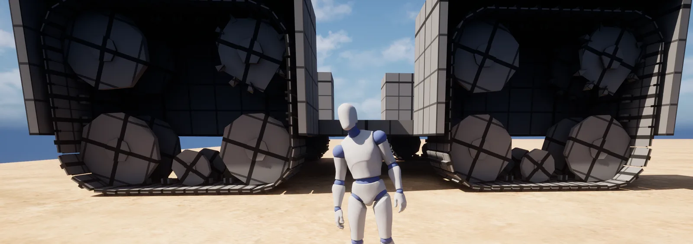

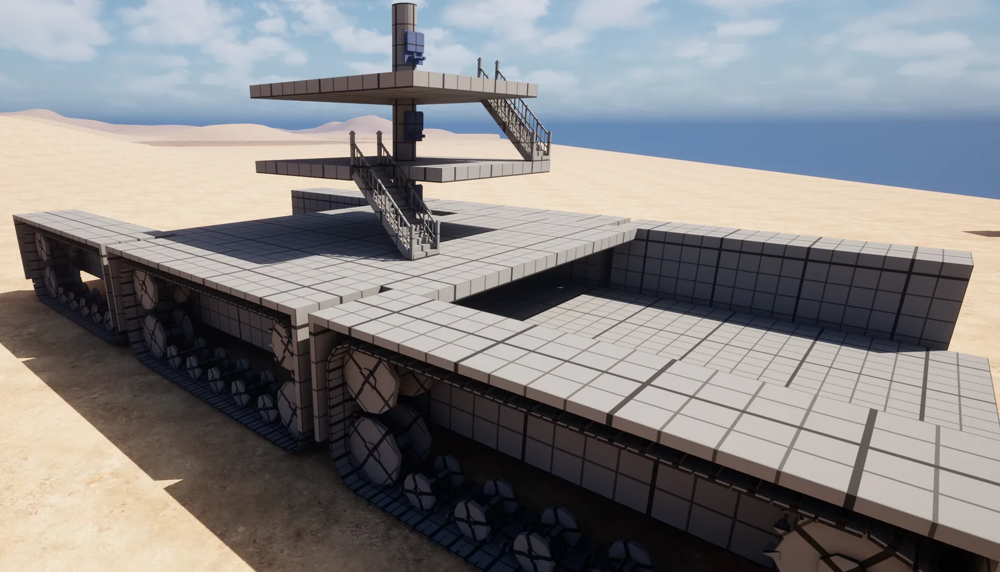

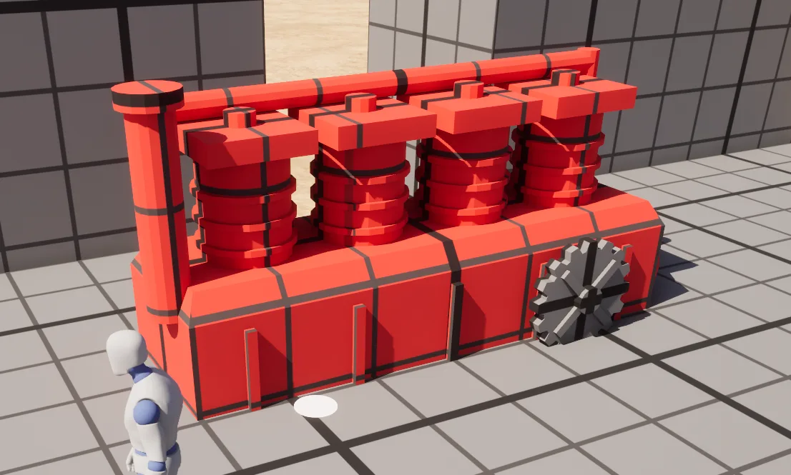

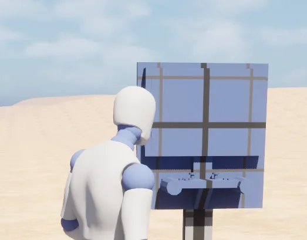

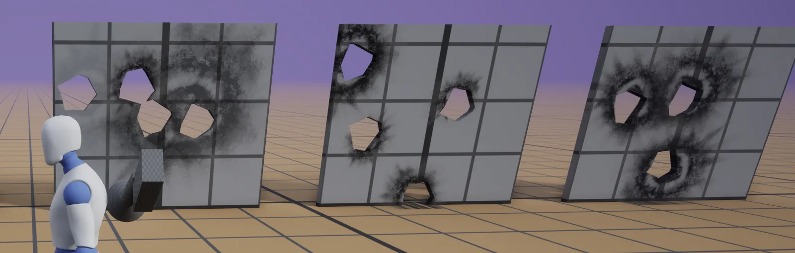

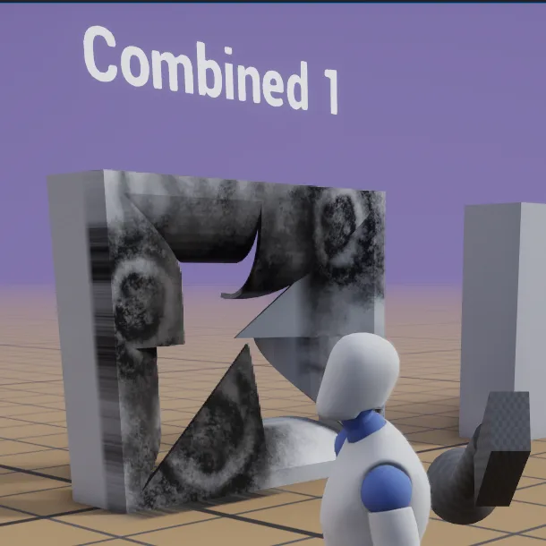

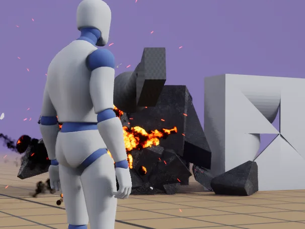

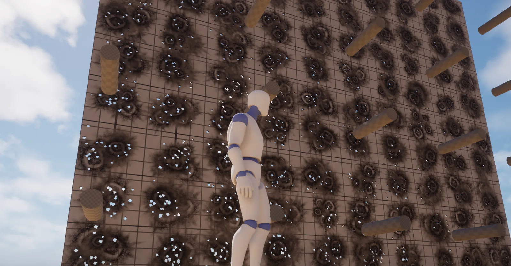

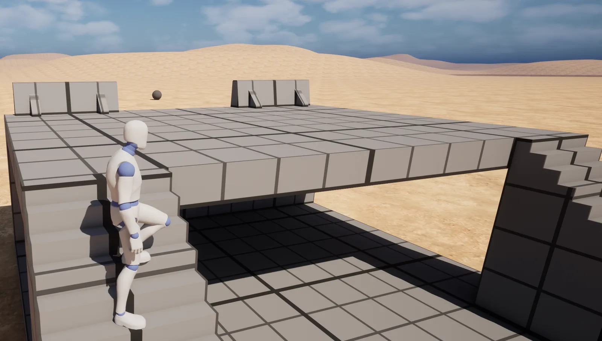

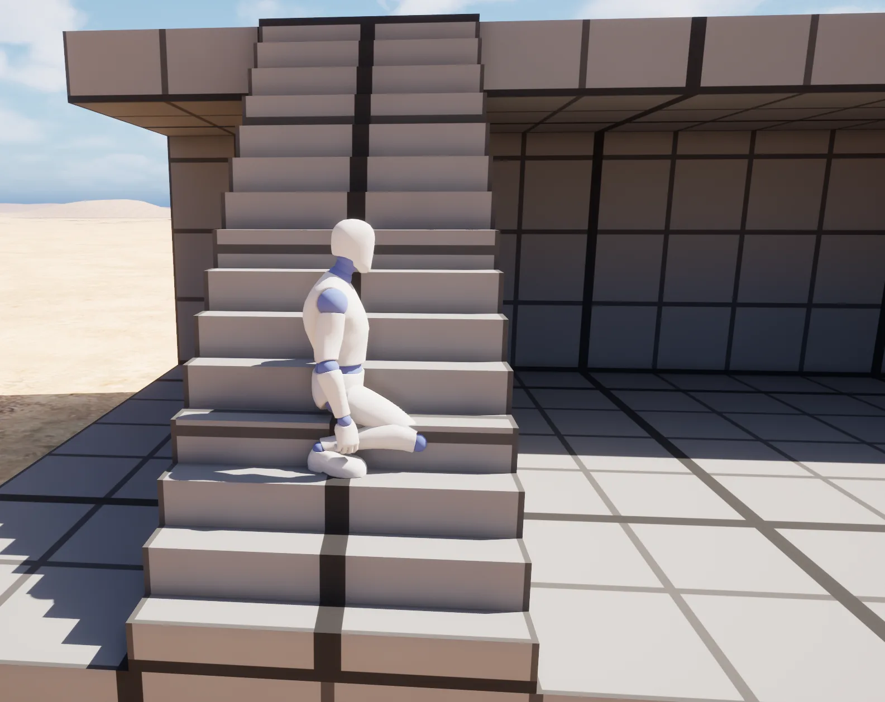

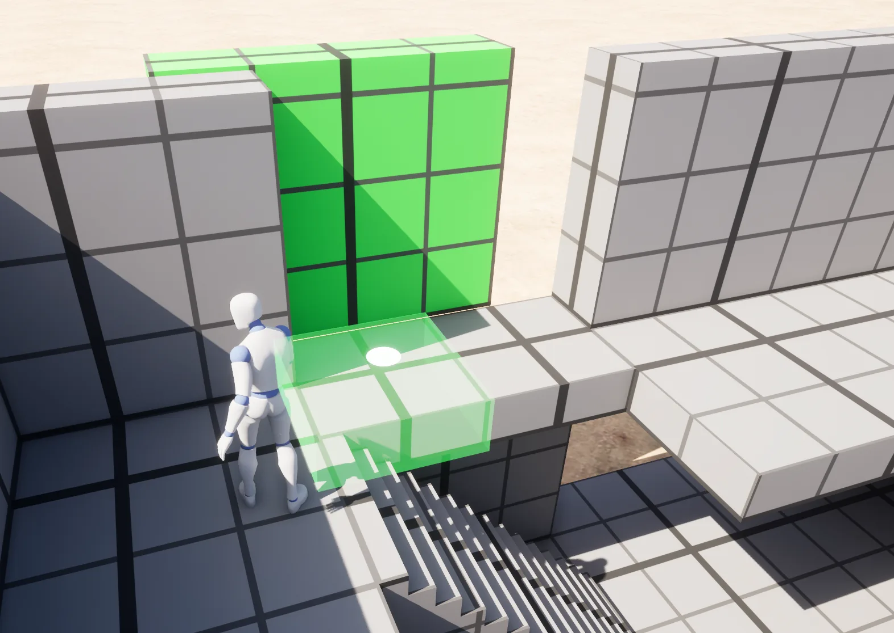

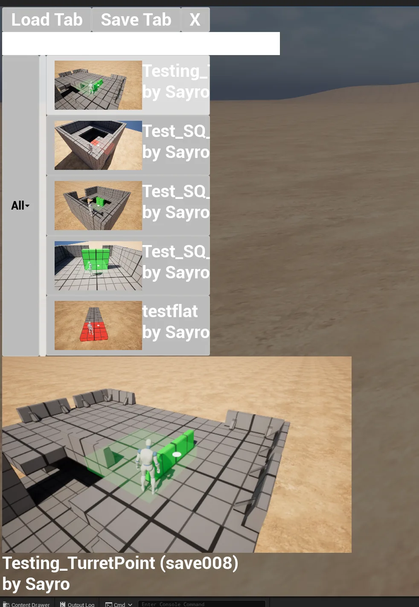